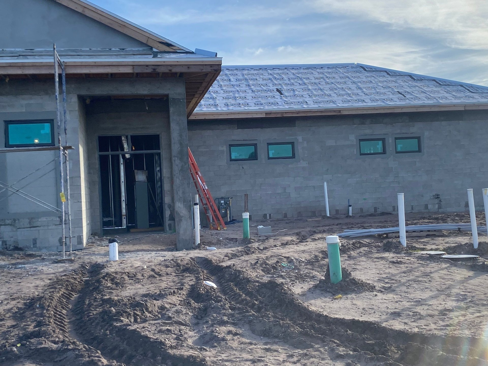

For a commercial property owner in Florida, the question of when to replace hurricane windows sits at an intersection of three timelines - the physical lifespan of the glazing system, the insurance renewal cycle, and the tenant experience window. Replace too early and capital is committed before it needs to be. Replace too late and the building faces uninsurability, failed seals that drive energy costs upward, tenant complaints, and the scramble of post-storm emergency replacement at premium pricing. This guide lays out how to read the warning signs, 2026 cost ranges for common commercial systems, phasing strategies for occupied buildings, and how the insurance claim path works when the trigger is storm damage.

How Long Hurricane Windows Last on Commercial Buildings
A well-installed commercial hurricane window system has three components that age on different schedules. The aluminum frame is the longest-lived - 25 to 40 years is typical before corrosion, sealant degradation, or anchorage fatigue become an issue. The insulated glass unit (IGU) is the shorter-lived component - 15 to 25 years before edge seal failure allows moisture into the airspace and the unit fogs. Perimeter sealant around the frame, which controls water infiltration into the building envelope, usually needs restoration every 10 to 15 years regardless of the frame and glass condition.
In Florida, three environmental factors accelerate aging: UV exposure on south and west elevations, salt air on coastal sites, and thermal cycling on dark-finished aluminum. A coastal Class A office in Fort Lauderdale will see its glazing age faster than an inland retail center in Orlando. Building orientation matters too - south and west elevations typically need replacement earlier than north and east.
Warning Signs That Replacement Is Due
The patterns that indicate system-level replacement rather than spot repair:
Fogged or Cloudy IGUs
Moisture between the two glass panes - visible as cloudiness, haze, or water droplets - means the edge seal has failed and the desiccant is saturated. On a single window, spot replacement of the IGU is possible. On a multi-unit pattern across multiple elevations, systemic seal failure is underway and coordinated replacement produces better economics than unit-by-unit repair.
Expired or Lapsed Florida Product Approvals
Florida Product Approvals are revised and occasionally retired. A building with 20-year-old impact glazing may be carrying products whose approvals have lapsed - meaning the glazing no longer has a current compliance pathway for insurance or for permit close-out on adjacent work. Pulling the current approval status is part of any replacement assessment.
Visible Frame Corrosion or Pitting
Aluminum should hold up for decades, but coastal salt exposure and failed protective coatings lead to pitting, white corrosion, or structural degradation around anchor points. Visible corrosion near anchors is a safety issue - the frame's attachment to the building may be compromised - and indicates replacement rather than cosmetic repair.
Persistent Water or Air Infiltration
Water stains on interior finishes, tenant complaints about drafts, and persistent HVAC shortfalls near window lines all point to envelope failure. Some of this is fixable with sealant restoration. When the infiltration persists after sealant work, the frame, glazing gasket, or anchorage itself has failed and replacement is the path.
Post-Storm Damage
A named storm passing through can leave glazing with visible glass cracks, frame deflection, sealant tear-out, or anchorage damage that is not always obvious from the exterior. A post-storm inspection by a qualified glazing subcontractor catches damage that looks cosmetic but has compromised the assembly's impact rating going forward. For a walkthrough of post-storm evaluation, see our hurricane preparation and post-storm inspection article.
Tenant or Valuation Drivers
Dated aluminum finishes, narrow storefront sightlines, and 1990s-vintage reflective tints read as Class B on a leasing tour regardless of structural condition. When a building is repositioning to Class A or preparing for sale, envelope replacement can drive both rent premium and valuation lift - even before the original glazing has failed mechanically.
| System Type | Installed Cost / SF Glass | Typical Project Range |
|---|---|---|
| Punched-opening impact windows | By scope | By scope |
| Pre-glazed storefront (ground-floor) | By scope | By scope |
| Window wall (mid-rise) | By scope | By scope |
| Curtainwall (mid- to high-rise) | By scope | By scope |
| Commercial entrances and vestibules | By scope | By scope |
| Commercial sliding doors (ESWindows SGD-2020) | By scope | By scope |
These are typical 2026 ranges across Florida commercial markets. For context on how these costs fit into the broader commercial glazing market, see our how much does impact glass cost for commercial buildings guide.
What Drives the Price Spread
Two projects of identical square footage can price at very different points inside those ranges. The main drivers:
- System choice. Pre-glazed storefront (ESWindows ES-8000) prices below curtainwall for equivalent coverage because shop glazing is faster than field glazing.
- DP rating. DP55 products price below DP80 products for the same frame profile.
- HVHZ vs non-HVHZ. HVHZ projects carry tighter product approvals, more robust anchorage, and more expensive frames.
- Access. Ground-floor swing-stage access is baseline; boom lifts, suspended scaffolding, and rope access on high-rise add meaningful project cost.
Replacement Phasing on Occupied Buildings
Most commercial hurricane window replacements happen on occupied buildings. Owners cannot vacate tenants for 4-6 months of envelope work. Phasing strategies that keep operations running:
Elevation-by-Elevation
Work one building face at a time, completing that elevation before moving to the next. Keeps noise and disruption concentrated and predictable for tenants. Works well on rectangular buildings with tenant spaces that cycle across elevations.
Floor-by-Floor
Work one floor at a time, typically starting at the top and working down. Works well for office buildings with relatively uniform tenant types per floor. Upper floors often have tighter access constraints that drive the sequence.
Tenant Space-by-Tenant Space
Coordinate with tenant rollover, vacancy windows, or lease-expiration timing. An anchor tenant leaving gives 30-60 days of access before the space is re-leased. Works well on retail centers and mixed-use where tenant turnover provides natural replacement windows.
Overnight and Weekend Work
For retail and hospitality, the building must stay open for business hours. Evening and weekend work, with temporary weatherproof enclosures during intermediate stages, keeps retail trading and restaurants serving.
Pre-glazed storefront reduces field install time substantially because the glass arrives factory-installed in the frame. On a 20,000 SF retail center, pre-glazed installation can compress field time from 10 weeks to 4-5 weeks - important on any occupied scope. ACG's pre-glazed delivery through ESWindows is a core differentiator on tight schedules. For a deeper look at the advantages, see our hurricane impact windows for commercial buildings article.
The Insurance Claim Path for Storm Damage
When replacement is triggered by named-storm damage rather than age, the path is different. A covered-loss claim sequence:
- Document the damage. Photograph every affected opening with scale reference, log the date and storm, and retain all debris if safely possible. Claims adjusters work from documented evidence.
- Notify the carrier promptly. Most commercial policies require prompt notice. Delay can create coverage complications.
- Get an adjuster inspection. The carrier's adjuster will inspect and scope the loss. Have a qualified glazing subcontractor present for the inspection - an experienced glazing contractor can identify damage an adjuster will miss.
- Receive the scope and estimate. The carrier issues a scope; the owner's contractor prepares an independent estimate. Gaps between the two are negotiated.
- Mobilize temporary protection if needed. Plywood or temporary glazing to close the envelope pending replacement - often reimbursable under the same claim.
- Order replacement and install. Lead times on impact-rated commercial product typically run 8-16 weeks, so temporary protection is usually required during the procurement window.
- Close out with documentation. Final invoice, close-out photos, permit close-out - all go to the carrier to finalize the claim.
Age-related seal failure, sealant restoration needs, and code-upgrade work are generally not covered by commercial property insurance. For the broader view of how commercial glazing insurance works, see our commercial glass insurance claims article.
Permit and Inspection Requirements
Commercial hurricane window replacement requires a building permit in every Florida jurisdiction. The permit package typically needs:
- Structural drawings or engineer's letter confirming wind loads
- Florida Product Approval or Miami-Dade NOA for the specified system
- Shop drawings showing frame sections, anchorage, and sealant details
- Contractor license documentation (CGC license for commercial glazing)
- Notice of commencement if the job exceeds the value threshold
Inspection points during installation typically include rough-opening, anchor installation, sealant application, and final. Miami-Dade and Broward add HVHZ-specific inspections. Missing an inspection is a common reason replacement jobs stall; a general contractor or glazing sub that knows the local jurisdiction prevents most of it.
When to Pull the Trigger
The replacement timing that produces the strongest economics combines three factors:
- System-level warning signs - multiple fogged IGUs, lapsed approvals, persistent infiltration - indicating that spot repair will not hold.
- Insurance renewal pressure - carrier requiring impact-rated upgrade as a coverage condition, or premium jumps making the capital pencil.
- Repositioning opportunity - tenant rollover, lease-up strategy, or pending sale where envelope modernization supports value.
When all three align, the replacement captures the full set of returns - lower insurance, lower operating expense, rent premium on repositioned space, and a clean building envelope heading into the next ten hurricane seasons. When only one aligns, capital deployment may be better timed.
ACG on Commercial Hurricane Window Replacement
ACG is a CGC-licensed Florida commercial glazing subcontractor (CGC1531993) headquartered in West Palm Beach. Five-plus years active delivering commercial projects across Florida. Our flagship impact system partner is ESWindows, with pre-glazed storefront (ES-8000), window wall (ES-9000), and sliding door (SGD-2020) systems that shorten field time on occupied replacement scopes. We handle permit, submittal, phasing, and tenant coordination from plans to close-out.
Ready to get started?
If your commercial building is showing warning signs - fogged IGUs, failed sealant, tenant complaints, or insurance pressure - send us the plans or a site walk request. We return a detailed scope with system recommendations, 2026 pricing, and phasing recommendations inside 48 hours. Call (772) 486-7711 or submit plans through our contact page.